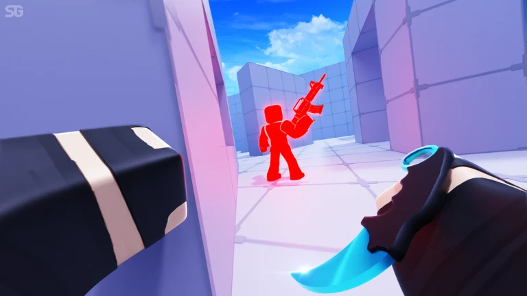
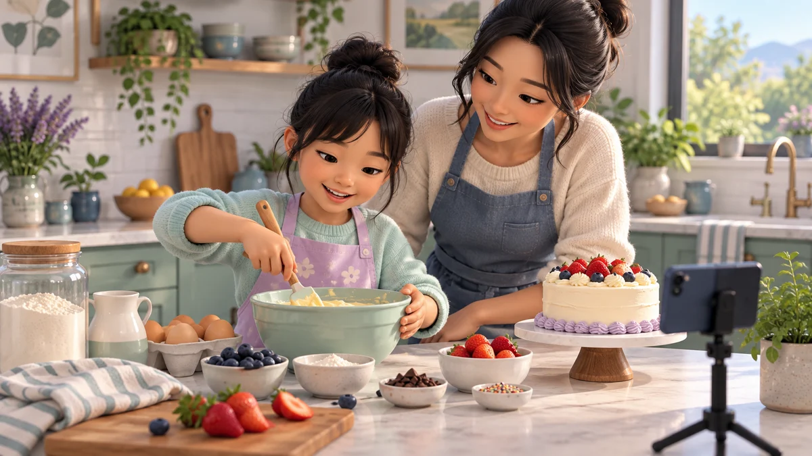
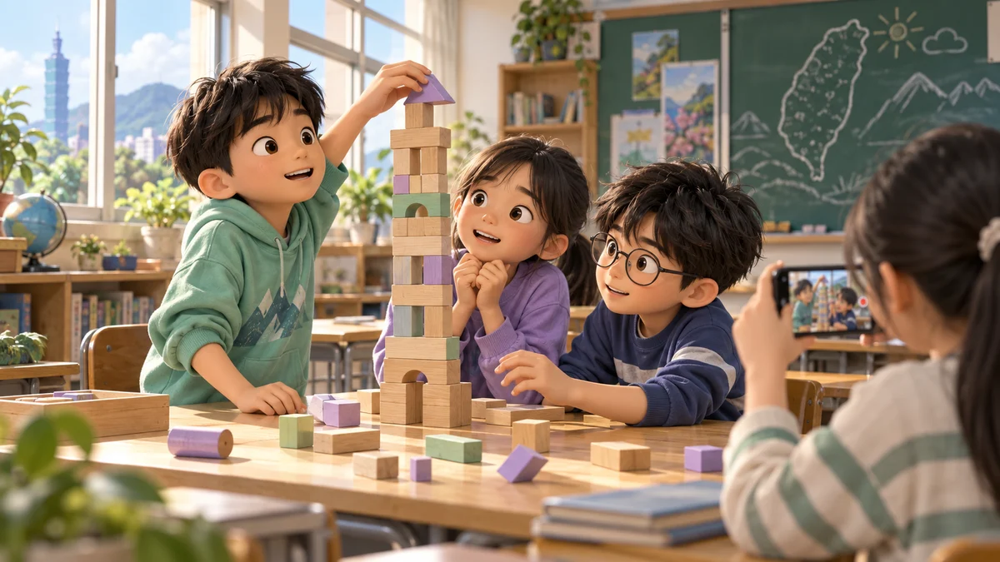
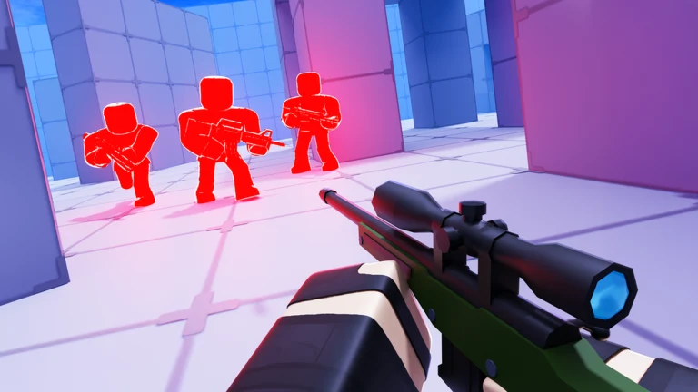
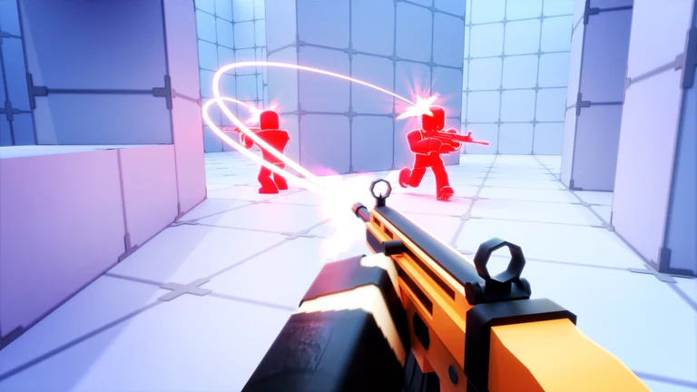
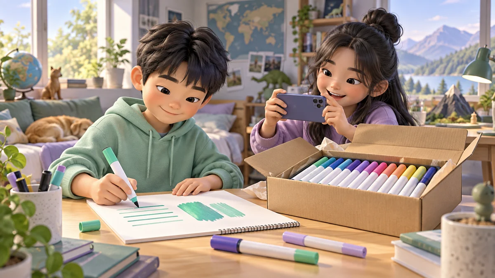

QUEST 01 開場
今天不是背名詞，是當拆解勇者
第一堂你學會「選」。第二堂要學會「拆」：高手為什麼這樣剪？



點有底線的詞可看解釋。藍色外框像遊戲對話框，跟著任務走就好。
你會說「好看」，但還說不出「哪裡好看」。今天要把感覺變成可操作的判斷。
任務目標
- 拆出一支片的骨架
- 找出Hook、節奏、視線焦點
- 產出拆片筆記，下一堂直接進剪映
QUEST 02 對決小遊戲
Hook 對決
哪一句開頭更讓人想看下去？點選你的選擇。
共 3 題。選對會升經驗值。
好的開頭通常先給「任務」或「限制」，不是先打招呼。
Hook 不是嗆人，是給觀眾留下的理由。選清楚的那句，後面也要真的交代結果。
QUEST 03 骨架小遊戲
把故事骨架排好
點下方碎片，依序填進 5 格。像組任務地圖。



正確順序：主題 → 事件 → 衝突 → 高潮 → 結果。長度可不均，位置通常很像。
QUEST 04 視線小遊戲
眼睛導演：點出該看哪裡
高手會偷導你的眼睛。點圖上「最該看」的位置。
目標：對準對手／關鍵動作附近。點錯可再點。
字幕、放大、對比色，都是在告訴觀眾「看這裡」。
這叫視線焦點。第二堂新能力：不只選素材，還要控制觀眾先看什麼、後看什麼。
QUEST 05 節奏小遊戲
節奏戰鬥：快／慢／停
一直快會累。點出合理的節奏組合。
情境：跑圖 → 發現對手 → 反殺瞬間 → 勝利反應
節奏靠對比：快推進、慢說明、停強調。建議：快→慢→停→慢。
QUEST 06 換地圖
同一套技能，換題材也能打
Roblox、旅遊、運動、美食，剪的是同一種「讓人看懂」。
差的是內容，不是方法。你學的是可帶走的能力。
把骨架抓到，題材換成校園、開箱也一樣能拆。
QUEST 07 道具箱
先拆，再叫工具幫忙
工具箱是加速器，不是代打。你先判斷，它再幫忙。
- 第一堂：建立觀念
- 第二堂：診斷高手作品 + 產出筆記
- 第三堂：帶筆記進剪映實作
也可用AI助手，但最後判斷是你的。
QUEST 08 通關檢核
這堂最核心的能力是？
找一支喜歡的 Shorts，用工具箱「拆片檢核」產出筆記。下一堂直接拿去剪映。